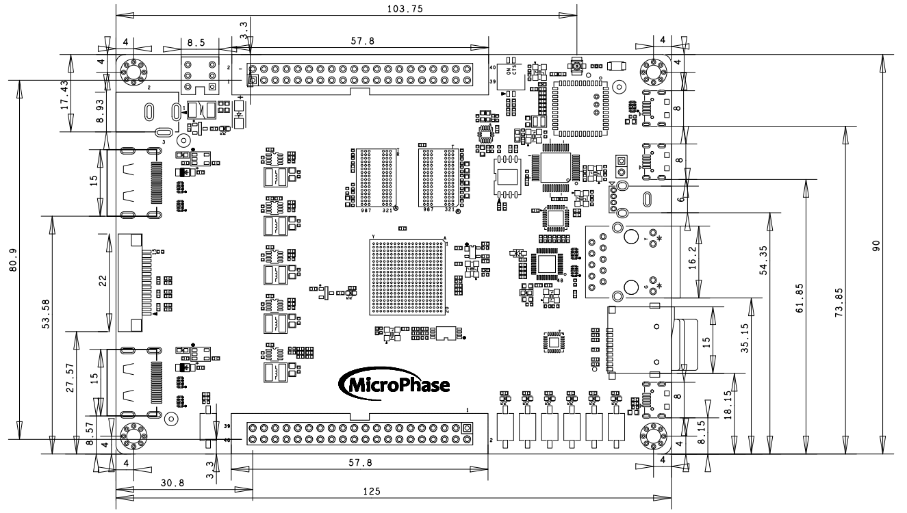
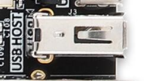
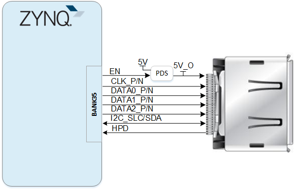
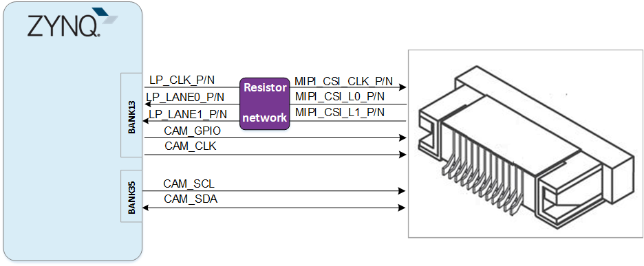
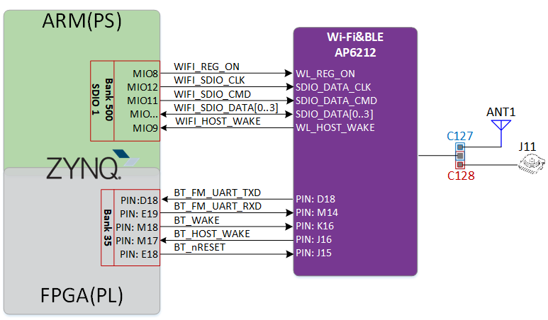
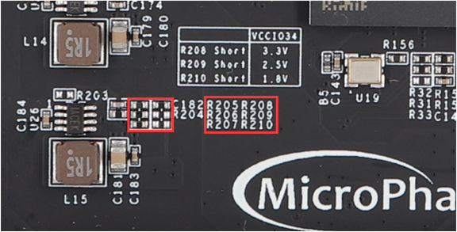
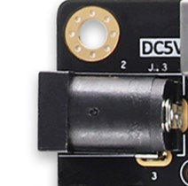

Mizar-Z7 Reference Manual
Development Environment:
Vivado 2018.3 is from Xilinx website
WeChat Public Number:

●1. Overview
Mizar-Z7 is a commercial-grade SoC development board based on the Xilinx Zynq-7000 series from Microphase Technology. It features up to 8Gb DDR3/L SDRAM, 128MB QSPI FLASH, onboard Gigabit Ethernet, USB OTG, UART serial ports, HDMI interface, MIPI-CSI interface, Wi-Fi with Bluetooth, and two 40-pin expansion interfaces.
○Board Layout

○Key Features
Xilinx Zynq™ XC7Z010-1CLG400C (7010 Version Only),
Xilinx Zynq™ XC7Z020-1CLG400C (7020 Version Only).DDR3: 512MB DDR3 RAM(7010 Version Only),
1GB DDR3 RAM(7020 Version Only).Flash: 256Mbit QSPI Flash, 8GB eMMC Flash.
Wi-Fi/BT: 1 channel Wi-Fi integrated BT, can be used for wireless transmission, IoT applications. (7020 Version Only)
MIPI CSI: 1 MIPI CSI for camera applications. (7020 Version Only)
KEY: 6 user’s keys, 2 PS control, 4 PL control.
LED: 6 user’s LEDs, 2 PS control, 4 PL control.
GPIO: 2 40-pin expansion ports (2.54mm pitch), 72 IOs in total, 48 voltage-adjustable IOs, all IOs are 3.3V by default.
USB JTAG: 1 onboard JTAG circuit, can debug and download the ZYNQ system through the USB cable.
USB UART:1 USB UART interface, used for serial communication with PC.
USB Host: 1 USB Host, supporting high-speed USB 2.0 communication.
USB Slave:1 USB Slave, provided for direct connection to a host device.
HDMI:
HDMI1: HDMI video output interface, can be configured as HDMI RX.
HDMI2: Video input interface, can be configured as HDMI TX (7020 Version Only)
PHY ETH: 1 10/100 Ethernet RJ45 interface, which can be used for Ethernet data exchange or other application.
SD Card: 1 SD Card slot for storing the operating system image, file system, and user data.
CLOCK: 1 33.33MHz active crystal oscillator provides a stable clock for the PS system.
1 50MHz active crystal oscillator provides additional clocks for the PL logic.
○Block diagram

○Mechanical Spec

●2. Function Resources
○FPGA
667 MHz dual-core Cortex-A9 processor
DDR3L memory controller with 8 DMA channels and 4
High Performance AXI3 Slave ports
High-bandwidth peripheral controllers: 1G Ethernet, USB 2.0, SDIO
Low-bandwidth peripheral controllers: SPI, UART, CAN, I2C
Programmable from JTAG, Quad-SPI flash, and microSD card
Programmable logic equivalent to Artix-7 FPGA
LUTs: 17,600 (7010)
53,200(7020)
DSP Slices: 80 (7010)
220 (7020)
Logic Cells: 28K (7010)
85K(7020)
Flip-Flops: 35,200 (7010)
106,400 (7020)
Total Block RAM: 2.1Mb (7010)
4.9Mb (7020)Analog Mixed Signal (AMS) / XADC: 2x 12 bit, MSPS ADCs with up to 17 Differential Inputs
Security: AES & SHA 256b Decryption & Authentication for Secure Programmable Logic Config
○DDR3
The module incorporates two 16-bit DDR3 memory chips: 512MB for the 7010 version and 1GB for the 7020 version..
| Signal Name | PIN Number | Signal Name | PIN Number |
|---|---|---|---|
| PS_DDR3_A0 | N2 | PS_DDR3_D9 | E3 |
| PS_DDR3_A1 | K2 | PS_DDR3_D10 | G3 |
| PS_DDR3_A2 | M3 | PS_DDR3_D11 | H3 |
| PS_DDR3_A3 | K3 | PS_DDR3_D12 | J3 |
| PS_DDR3_A4 | M4 | PS_DDR3_D13 | H2 |
| PS_DDR3_A5 | L1 | PS_DDR3_D14 | H1 |
| PS_DDR3_A6 | L4 | PS_DDR3_D15 | J1 |
| PS_DDR3_A7 | K4 | PS_DDR3_D16 | P1 |
| PS_DDR3_A8 | K1 | PS_DDR3_D17 | P3 |
| PS_DDR3_A9 | J4 | PS_DDR3_D18 | R3 |
| PS_DDR3_A10 | F5 | PS_DDR3_D19 | R1 |
| PS_DDR3_A11 | G4 | PS_DDR3_D20 | T4 |
| PS_DDR3_A12 | E4 | PS_DDR3_D21 | U4 |
| PS_DDR3_A13 | D4 | PS_DDR3_D22 | U2 |
| PS_DDR3_A14 | F4 | PS_DDR3_D23 | U3 |
| PS_DDR3_BA0 | L5 | PS_DDR3_D24 | V1 |
| PS_DDR3_BA1 | R4 | PS_DDR3_D25 | Y3 |
| PS_DDR3_BA2 | J5 | PS_DDR3_D26 | W1 |
| PS_DDR3_NCAS | P5 | PS_DDR3_D27 | Y4 |
| PS_DDR3_CKE | N3 | PS_DDR3_D28 | Y2 |
| PS_DDR3_CLK_N | M2 | PS_DDR3_D29 | W3 |
| PS_DDR3_CLK_P | L2 | PS_DDR3_D30 | V2 |
| PS_DDR3_NCS | N1 | PS_DDR3_D31 | V3 |
| PS_DDR3_DM0 | A1 | PS_DDR3_DQS_N0 | B2 |
| PS_DDR3_DM1 | F1 | PS_DDR3_DQS_N1 | F2 |
| PS_DDR3_DM2 | T1 | PS_DDR3_DQS_N2 | T2 |
| PS_DDR3_DM3 | Y1 | PS_DDR3_DQS_N3 | W4 |
| PS_DDR3_D0 | C3 | PS_DDR3_DQS_P0 | C2 |
| PS_DDR3_D1 | B3 | PS_DDR3_DQS_P1 | G2 |
| PS_DDR3_D2 | A2 | PS_DDR3_DQS_P2 | R2 |
| PS_DDR3_D3 | A4 | PS_DDR3_DQS_P3 | W5 |
| PS_DDR3_D4 | D3 | PS_DDR3_NRST | B4 |
| PS_DDR3_D5 | D1 | PS_DDR3_ODT | N5 |
| PS_DDR3_D6 | C1 | PS_DDR3_NRAS | P4 |
| PS_DDR3_D7 | E1 | PS_DDR3_NWE | M5 |
| PS_DDR3_D8 | E2 |
○Giga ETH
The RTL8211E chip supports 10/100/1000M network transfer rate and communicates with the MAC layer of the Zynq7000 PS system via the RGMII interface. It supports MDI/MDX adaptation, multiple speed adaptation, master/slave adaptation and MDIO bus support for PHY register management.
○USB Host
The USB2.0 transceiver on-board is the USB3320C-EZK, which supports the ULPI standard interface. It’s connected with ZYNQ’s bus interface to enable high-speed USB2.0 Host mode data communications.

○USB UART
A USB to UART chip, the CH340, is provided for user connection to the host PC.
| Signal Name | Pin Name | Pin Number | Explain |
|---|---|---|---|
| UART_TX | PS_MIO15_500 | C5 | UART data output |
| UART_RX | PS_MIO14_500 | C8 | UART data input |
○USB JTAG
We have incorporated the JTAG download and debug circuitry into the board, enabling users to develop and debUIug ZYNQ through a USB cable.
○Boot Config
The Mizar-Z7 startup settings include JTAG, QSPI and SD modes, which are controlled by the MODE input signal from the J1. The user has the option to change mode through the jumper cap. The startup mode is configured as shown in the figure below.

○Quad-SPI Flash
The onboard 256M Quad-SPI Flash memory W25Q256FVEI is used for the storage of the initial FPGA configuration, user applications and data.
| Position | Model | Capacity | Factory |
|---|---|---|---|
| U3 | W25Q256FVEI | 256M Byte | Winbond |
○Clock
A 33.33 MHz active crystal oscillator provides a stable clock for the PS system, while a 50 MHz active crystal oscillator provides additional clocks for the PL logic.
| Position | Signal Name | Frequency | Pin Number |
|---|---|---|---|
| Y1 | PS_CLK_33d3 | 33.333MHz | E7 |
| U19 | PL_CLK_50M | 50MHz | H16 |
○Reset
A dedicated key (K1) is available to generate a ‘reset’ signal for designs running on the FPGA.
○Micro SD
The board features a Micro SD slot interface for storing the ZYNQ chip’s bootloader, Linux operating system kernels, file systems, and user data.
○HDMI
HDMI1
One HDMI video output interface can realize 1080P video images. Can be configured as HDMI output.
HDMI2
This HDMI interface is supported only by the 7020 version and can also be configured as an HDMI output.
HDMI and ZYNQ connection diagram as shown in the figure.

○MIPI CSI
This interface is only supported on the 7020 version.
The MIPI CSI port on the Mizar-Z7 is a 15-pin, 1 mm pitch top contact FPC connector designed to connect a MIPI interface camera. The MIPI FPC connector pinout is compatible with Raspberry Pi cameras.
The MIPI CSI-2 bus is connected to the ZYNQ PL IOs, enabling the implementation of compatible D-PHY receivers using the Zynq. The interface is tested to operate at up to 672 Mbps per channel. Up to 950 Mbps per Lane based on Zynq-7000 chip specifications.
The MIPI CSI-2 receiver IP core is available from Xilinx and includes embedded Linux support. It requires a licence to use, but it is possible to obtain an evaluation licence from Xilinx at no cost.

○Wi-Fi
This module is only supported on the 7020 version.
Mizar Z7 provides Wi-Fi & BLE wireless communication, which can be supported by the wireless module during system development by connecting BLE under ARM via EMIO interface:
Wi-Fi 802.11b/g/n
Bluetooth V4.0
There are two kinds of antennas provided on the board, one is ceramic antenna and the other is IPEX antenna, ceramic antenna is used by default, and users can choose what kind of antenna by soldering capacitor C127,C128.
PCM interface is mainly used for Bluetooth voice transmission, no connection is made on this board.

○LED
We provide six LEDs for user to use. When the corresponding pin of the FPGA is in a low state, the LED is illuminated.
| Position | Signal Name | FPGA Number | Pin Name |
|---|---|---|---|
| D4 | PS_LED1 | B13 | PS_MIO50_500 |
| D5 | PS_LED2 | B9 | PS_MIO51_501 |
| D6 | PL_LED1 | G14 | IO_0_35 |
| D7 | PL_LED2 | C20 | IO_L1P_T0_AD0P_35 |
| D8 | PL_LED3 | B20 | IO_L1N_T0_AD0N_35 |
| D9 | PL_LED4 | H17 | IO_L13N_T2_MRCC_35 |
○Key
We provide six keys for user to use. When a key is pressed, the corresponding FPGA pin goes to a low level.
| Position | Signal Name | Pin Number | Pin Name |
|---|---|---|---|
| K2 | PS_KEY1 | E6 | PS_MIO40_500 |
| K3 | PS_KEY2 | B14 | PS_MIO47_501 |
| K4 | PL_KEY1 | R19 | IO_0_34 |
| K5 | PL_KEY2 | T19 | IO_25_34 |
| K6 | PL_KEY3 | J15 | IO_25_35 |
| K7 | PL_KEY4 | B19 | IO_L2P_T0_AD8P_35 |
○GPIO
This device is equipped with a maximum of 72 user IO pins that can be used for various custom applications. All user IOs are length-matched and can be used as differential pairs.
48 IOs are voltage-adjustable, they are configured to 3.3V by factory default. If users want to adjust the voltage of these IOs, they can adjust the voltage of IOs by changing the voltage of VCCIO34 by selectively mounting 0 ohm resistors to R208,R209,R210.
Solder only one of R208, R209, or R210.

Adjust the IO voltage and resistor mounting correspondence table as follows
| Resistors | BANK34 Voltage | IO Voltage |
|---|---|---|
| R208 | 3.3V | 3.3V(default state) |
| R209 | 2.5V | 2.5V |
| R210 | 1.8V | 1.8V |
| Replace R205 resistance, R208 short | 0.6*(1+R205/10k) | The adjusted voltage range must be1.2V-3.3V. |
All IOs use differential alignments in the PCB design and are grouped in equal lengths.
JP1:
| Pin | Signal Name | FPGA Pin No. | Pin | Signal Name | FPGA Pin No. |
|---|---|---|---|---|---|
| 1 | GPIO1_0P | N18 | 2 | GPIO1_0N | P19 |
| 3 | GPIO1_1P | N17 | 4 | GPIO1_1N | P18 |
| 5 | GPIO1_2P | N20 | 6 | GPIO1_2N | P20 |
| 7 | GPIO1_3P | T17 | 8 | GPIO1_3N | R18 |
| 9 | GPIO1_4P | T20 | 10 | GPIO1_4N | U20 |
| 11 | VCC_5V | - | 12 | GND | - |
| 13 | GPIO1_5P | V20 | 14 | GPIO1_5N | W20 |
| 15 | GPIO1_6P | Y18 | 16 | GPIO1_6N | Y19 |
| 17 | GPIO1_7P | Y16 | 18 | GPIO1_7N | Y17 |
| 19 | GPIO1_8P | W18 | 20 | GPIO1_8N | W19 |
| 21 | GPIO1_9P | U18 | 22 | GPIO1_9N | U19 |
| 23 | GPIO1_10P | V16 | 24 | GPIO1_10N | W16 |
| 25 | GPIO1_11P | V15 | 26 | GPIO1_11N | W15 |
| 27 | GPIO1_12P | W14 | 28 | GPIO1_12N | Y14 |
| 29 | VCC_3V3 | - | 30 | GND | - |
| 31 | GPIO1_13P | U14 | 32 | GPIO1_13N | U15 |
| 33 | GPIO1_14P | U13 | 34 | GPIO1_14N | V13 |
| 35 | GPIO1_15P | V12 | 36 | GPIO1_15N | W13 |
| 37 | GPIO1_16P | T12 | 38 | GPIO1_16N | U12 |
| 39 | GPIO1_17P | T11 | 40 | GPIO1_17N | T10 |
JP2:
| Pin | Signal Name | FPGA Pin No. | Pin | Signal Name | FPGA Pin No. |
|---|---|---|---|---|---|
| 1 | GPIO2_0P | J18 | 2 | GPIO2_0N | H18 |
| 3 | GPIO2_1P | G17 | 4 | GPIO2_1N | G18 |
| 5 | GPIO2_2P | K14 | 6 | GPIO2_2N | J14 |
| 7 | GPIO2_3P | H15 | 8 | GPIO2_3N | G15 |
| 9 | GPIO2_4P | J20 | 10 | GPIO2_4N | H20 |
| 11 | VCC_5V | - | 12 | GND | - |
| 13 | GPIO2_5P | L14 | 14 | GPIO2_5N | L15 |
| 15 | GPIO2_6P | K19 | 16 | GPIO2_6N | J19 |
| 17 | GPIO2_7P | K16 | 18 | GPIO2_7N | J16 |
| 19 | GPIO2_8P | L19 | 20 | GPIO2_8N | L20 |
| 21 | GPIO2_9P | L16 | 22 | GPIO2_9N | L17 |
| 23 | GPIO2_10P | M14 | 24 | GPIO2_10N | M15 |
| 25 | GPIO2_11P | N15 | 26 | GPIO2_11N | N16 |
| 27 | GPIO2_12P | P15 | 28 | GPIO2_12N | P16 |
| 29 | VCC_3V3 | - | 30 | GND | - |
| 31 | GPIO2_13P | R16 | 32 | GPIO2_13N | R17 |
| 33 | GPIO2_14P | V17 | 34 | GPIO2_14N | V18 |
| 35 | GPIO2_15P | T16 | 36 | GPIO2_15N | U17 |
| 37 | GPIO2_16P | T14 | 38 | GPIO2_16N | T15 |
| 39 | GPIO2_17P | P14 | 40 | GPIO2_17N | R14 |
○Power
The board is powered by a +5V supply through a DC jack.
